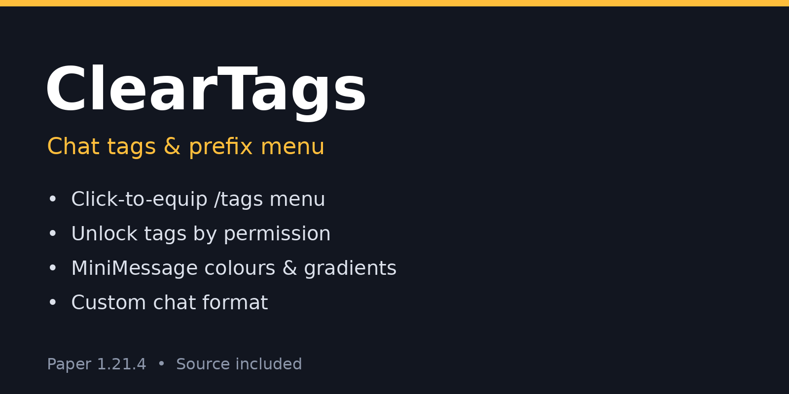

ClearTags
Chat tags without the setup headache. Players type /tags, see every tag, and click to equip one. Tags they haven't unlocked show as locked grey dye.
$5.99

Why ClearTags
- Click menu: unlocked tags show their icon, locked tags show as grey dye, and a barrier removes your tag.
- Unlock by permission:
cleartags.tag.<id>, orcleartags.tag.*for all, so tags work with ranks, store packages or crates. - No database: the equipped tag is saved on the player.
Features
- Tags use MiniMessage, so colours and gradients work
- Custom chat format, e.g. <tag><name><gray>: </gray><message>
- /tags <tag> and /tags clear for players
- /tags set <player> <tag|none> and /tags reload for admins
Commands & permissions
| Command | Who |
|---|---|
/tags, /tags <tag>, /tags clear | Players |
/tags set <player> <tag|none>, /tags reload | Admins |
| Unlock a tag | cleartags.tag.<id>, or cleartags.tag.* for all |
Pair it with any permissions plugin (such as LuckPerms) to hand out tags.
Dependencies
None. Pair it with any permissions plugin (such as LuckPerms) to hand out tags.
Tested
Tested on Paper 1.21.4 with a bot: the menu opened, a locked tag was refused, an unlocked tag equipped, and chat showed the prefix.
Example config
# ClearTags. Players need cleartags.tag.<id> to equip a tag (or cleartags.tag.* for all).
chat-format: "<tag><name><gray>: </gray><message>" # <tag> is empty when no tag is equipped
menu-title: "<dark_gray>Choose your tag"
messages:
equipped: "<green>Equipped tag <tag>"
cleared: "<yellow>Tag removed."
locked: "<red>You haven't unlocked that tag."
tags:
vip:
display: "<gold>[VIP] "
icon: GOLD_INGOT
description: "For our supporters"
builder:
display: "<aqua>[Builder] "
icon: BRICKS
description: "Master of blocks"
pvp:
display: "<red>[Warrior] "
icon: IRON_SWORD
description: "Fearless in battle"
Requirements
- Paper 1.21.4
- Java 21
Installation
Full walkthrough: ClearTags setup guide.
- Stop your server.
- Put
ClearTags-1.0.0.jarin yourplugins/folder. - Start the server so
plugins/ClearTags/config.ymlis created. - Set up your tags and chat format in the config, give players
cleartags.tag.<id>permissions, then run/tags reload.
Support
Bugs or questions: open an issue on GitHub.
Licence
One server network per purchase. No redistribution or resale. See the terms.
Buy ClearTags — $5.99
Instant download
Pay with Bitcoin through Sell.app and your ClearTags download is delivered automatically as soon as the payment is confirmed.
Checkout is handled by Sell.app. Your download link appears on the order page and is emailed to you.